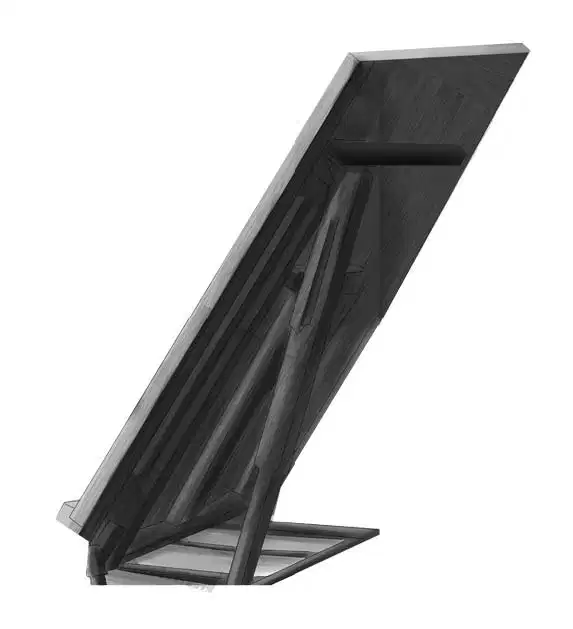

Violet was hardly in the car when the questions began.
What happened in there?” Benny asked.
You’re all right?” Jessie wanted to know.
Miss Smith didn’t scare you today, did she?” asked Henry.
Violet laughed. “It was all a surprise,” she said. “It’s hard to know where to begin.”
“Begin at the beginning,” said Benny.
“First,” Violet said, “we were wrong about Miss Smith. So is everyone else, too. She isn’t an artist at all.”
“But—” Benny said.
“Miss Lane, Miss Ruth Lane, is the artist,” Violet explained. “She’s a tiny little woman. That big window at the back of the Tower House is the room where she works.”
Henry said,“Wait a minute.You said Ruth Lane. We know the house was owned by the Lane family. But no one ever said anything about a Ruth Lane.”
Benny said, “Ruth Lane—R.L. There we are! Those are the initials on the locket. Now we’re getting somewhere.”
Jessie said, “So there are two women who live in the Tower House.”
“And ten cats,” Violet added. “It’s funny, you don’t notice the way the house smells after you’ve been inside for a little bit.”
The talking stopped for a moment. Then Benny said, “So it looks as if Miss Smith keeps house for Miss Lane.”
Yes,” Violet agreed. “Miss Lane says she doesn’t like people. She just likes cats. But she was very nice to me. Maybe she surprised herself and liked having company.”
“She probably thinks you are all right because you saved her cat,” Benny said.
“Did Miss Lane paint your picture?” asked Henry.
Violet shook her head. “No, she just made a pencil drawing while I held Ali. She wants me to come back tomorrow at the same time. She gave me this little note. I guess she doesn’t want me to forget.”
“Let’s see,” Benny said. He unfolded the paper Violet gave him and read, “‘Please be ready for me at 10. Thank you.’”
Suddenly Benny began to feel in all of his pockets until at last he pulled out another paper. He unfolded it and put it beside Miss Lane’s note.
“Look at that!” he said. “I think I understand something now.”
All the Aldens looked at the two notes.
“The same kind of paper!” Violet said.
“And the same writing, I’m almost sure,” Henry said, beginning to smile. “See the ‘thank you’?”

Benny said, “That’s what I think. But what about that funny sentence, ‘All thanks you’? Miss Lane wouldn’t write that, would she, Violet?”
Then Violet made a clever guess. “Let me see those notes,” she said. “Look, Benny, the word isn’t all. It’s the name Ali. The letter i looks like the letter l.”
Benny said, “Then the note says ‘Ali thanks you. We all thank you.’ And Ali Baba is Miss Lane’s favorite cat, so she must have written the note and put it by our trailer. Well, that’s another mystery solved.”
“Not quite,” Henry said. “That thank-you note was written after the grass fire in the Tower House yard. But Miss Lane and Miss Smith didn’t know who we were or where we were living. How did the note get delivered?”
Violet said, “I don’t know. But the note fits with the ladies being so shy.I really never met anyone as shy as Miss Lane and Miss Smith.”
“I wish Miss Lane wanted to paint my picture,” Benny said. “Maybe I could find out how she knew us and where we lived at the beach.”
Just before sunset that evening, Mr. Lee walked down the beach with Richard. He did not have his metal-finder with him. He was interested in hearing about Violet’s visit.
When he had heard all the news,he said, “There are famous paintings of cats, and the artist’s name is Ruth Lane. There are a lot of people who buy and collect those paintings. In fact I’ve seen cat portraits by Ruth Lane in New York shops. But I just happen to like dogs better than cats.”
Mr. Lee patted Richard, and the big dog wagged his tail.
The Aldens walked with Mr. Lee along the beach until he was nearly home.
“I don’t think I’ll be taking any midnight walks,” Mr. Lee said as they told him goodnight. “I mean I feel I’ll sleep well tonight,”he added quickly.
As the Aldens walked back toward the trailer, Benny said, “I wonder what Mr. Lee meant about not taking a midnight walk.That remark just slipped out. He seemed sorry right after he said it.”
Henry laughed at Benny and said, “There you go again. Still looking for mysteries.”
But Benny was stubborn. “Well, there are still a few mysteries. One big one is why Miss Smith doesn’t want that locket. It just has to have something to do with her or Miss Lane.”
Jessie said, “Tomorrow’s another day. Maybe we’ll find the answer then. I think it’s time for bed.”
On her second visit to Miss Lane, Violet knew what to expect. She knew that the little artist had a sharp tongue, and she didn’t mind too much. Violet felt sorry for the little lady who had shut herself off from people.
As Violet sat down in the chair, Miss Lane said, “Never mind holding the cat. I can paint him in any time. I’ve drawn your arms.”
Then Violet noticed that Miss Lane was painting today, not drawing. She worked quickly, almost as if she were painting a house, Violet thought.

You paint fast,” Violet remarked.
“I have to,” answered the artist. “This paint dries in twenty minutes. It’s not oil. It’s acrylic paint. Look right at me. Never mind smiling.”
This amused Violet. She couldn’t help smiling a little. She knew Miss Lane was painting her eyes.
Suddenly without any warning, Miss Lane said, “Good. That’s enough. Come day after tomorrow.”
Violet got up and started to go out. Miss Lane said, “Look at the picture if you want to.”
“Oh, may I?” asked Violet, surprised. She took one look at the picture.“That looks exactly like me!” she said.
Yes, it does. Today was easy. Everything came right,and the colors are just right.”Miss Lane looked very much pleased.
Violet said, “It must be wonderful to paint so well. You must be very happy.”
Miss Lane shrugged but said nothing.
Violet asked, “Will you sell this?”
“Probably.”
“I hope people won’t know it is my picture,” Violet exclaimed.“You aren’t going to put my name on it, are you?”
“No,” Miss Lane said gruffly. “The name of the picture is ‘Girl with Cat.’”
“Oh, thank you,” Violet said.
“I’ll do more than that,” Miss Lane went on. “I’ll change the mouth so the picture doesn’t look like you. I’ve never changed a picture before for anybody.”
“Oh, that’s very kind of you!” Violet burst out. “I know an artist doesn’t like to change his picture.”

Miss Lane had certainly never been called kind before in her life. But this time she did feel kind—and it was odd, she liked it.
Violet said, “Please don’t change the picture. My grandfather might want to buy it. I do wish you’d paint Benny. But nobody could paint him. He’s never still a minute.”
“I expect he can look straight at me for one minute and then later for another minute?”
“Oh, yes. He’d try. He might not like the idea of sitting still to have his picture painted, but he would do it for Grandfather.”
“Who is this grandfather?” Miss Lane asked.
“Grandfather? Well, we live with him. Our parents died years ago. He is James Henry Alden, and my brother Henry is Henry James Alden. He is the best grandfather anyone ever had.”
You do sound like a very happy family,” Miss Lane said, and Violet thought her voice had a sad sound. The sharpness that had been there earlier was gone.

Violet said slowly, “I have an idea I hope you will like. Here at the beach we have picnics all the time. We like to eat outdoors. Couldn’t you and Miss Smith take the noon hour and come to have lunch with us? It is really not very far. I’d love to have you know Henry and Jessie and Benny.”
Miss Lane shook her head. “No, I don’t think we’d better.”
“Oh, dear!” Violet said. “We’d all like it so much. I’ll tell you how to make it easier. Henry will come for you about noon, and you won’t have to do a thing but get in the car.”
Something in Violet’s voice and in her smile must have touched Miss Lane. She said, “It is very kind of you. Yes, we can come after all. What time did you say?”
“Well, I said noon, but let’s call it quarter of twelve. By that time Benny will be shouting for lunch. He is always hungry. I’ll tell Jessie.”
“Don’t you have to ask her?”
“Oh, no. Jessie is the housekeeper. She expects things like this—company for lunch.”
Miss Lane called Miss Smith and said, “Mary, we are going out for lunch today.”
Miss Smith looked very surprised.
Violet saw her family waiting in the blue car. She said, “Oh, do please come and meet my family.”
The two women went with Violet to the door. In an instant both Benny and Henry were out of the car. Violet introduced everyone, and the ladies said “How do you do” to each one and nodded stiffly.
The Aldens tried not to look too surprised to see the two women no one in Beachwood knew.
When the blue car was well on its way, Violet said, “Jessie, I’ve asked Miss Lane and Miss Smith to come for a picnic lunch—today.”
“And are they really coming?” asked Benny.
Yes, they are!” Violet answered.
Henry laughed and said, “Violet, sometimes you can really surprise us.”
“It wasn’t so hard,” Violet said. “I think no one has ever tried to ask the ladies before. People have thought they were unfriendly. They’re really just shy.”
“And independent, too,” Jessie said. “They have thought they could get along without people.”
Benny said, “Have you ever noticed that cats are like that, too? They are always independent and like to be free. They don’t make the kind of pets dogs do.”
“Perhaps that’s why the Tower House is a home for ten cats,” Henry said. “But I’d still like to know if Miss Lane and Miss Smith left us that note.”